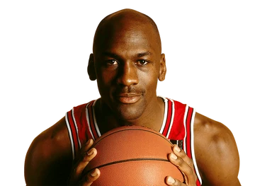

História
O Chicago Bulls é um time de basquete profissional americano sediado em Chicago, Illinois. Os Bulls competem na National Basketball Association (NBA) como um membro da Divisão Central da Conferência Leste da liga.[3] A equipe foi fundada em 16 de janeiro de 1966 e jogou seu primeiro jogo durante a temporada de 1966/67.[4] Os Bulls jogam seus jogos em casa no United Center, uma arena compartilhada com o Chicago Blackhawks da NHL.Os Bulls tiveram sucesso durante os anos 90, quando foram responsáveis por popularizar a NBA em todo o mundo. Eles são conhecidos por terem uma das maiores dinastias da NBA, vencendo seis títulos da NBA entre 1991 e 1998. Todas as seis equipes foram lideradas por Michael Jordan, Scottie Pippen e pelo técnico Phil Jackson. Os Bulls é a única franquia da NBA a vencer vários campeonatos e nunca perder uma série de finais da NBA em sua história. Muitos especialistas e analistas consideram o Bulls de 1992 uma das maiores equipes da história da NBA
Títulos
- 6 Títulos(1991-92/1992-93/1993-94/1996-97/1997-98/1998-99)
Melhores Jogadores
Dentre todos os jogadores que já passaram pela franquia aqui elencamos os 5 melhores da história da franquia.
Michael Jordan
Michael Jeffrey Jordan (Nova Iorque, 17 de fevereiro de 1963) é um empresário e ex-basquetebolista estadunidense que atuava como ala-armador. Considerado por muitos como o melhor jogador de basquete de todos os tempos, é considerado também como um dos mais importantes desportistas masculinos da história.[1][2][3] Atualmente é proprietário da 23XI Racing, equipe da NASCAR, onde seus carros levam os números 23, pilotado por Bubba Wallace, e 45, pilotado por Kurt Busch em 2022 e Tyler Reddick em 2023. Além disso, foi proprietário do Charlotte Hornets, equipe da NBA.
